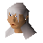

Taverly
Location at 2900, 3458 · Kingdom of Asgarnia
Open on the world map → Open in knowledge graph → Below: Taverly (underground)
NPCs
| NPC | Level | Spawns | Notable drops |
|---|---|---|---|
| 33 | 19 | Herb drop table, Coins, Vial, Iron dagger | |
| 25 | 3 | ||
| shop | 1 | ||
| shop | 1 | ||
| 1 | |||
| 1 | |||
 The Lady of the Lake | 1 |